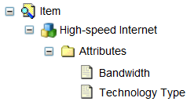

This section provides steps on how to accomplish various tasks within Catalog Designer:
Suppose an item, High-speed Internet, contains two attributes:

Bandwidth must be populated when TechnologyType=Ethernet, and may not be populated otherwise.
To create a mandatory flag by attaching a rule, complete these steps:
The script contains the following code:
if(infoModelName=="testInfo"){
if (dynamicRow.num==1) {
dynamicRow.userNAme=Global.getUserId();
return true;
}
}
else{
return false;}
value = Select userNAme from testInfo where num equal 1
return value
The following steps test the rule:
if(testRule1()=="upadmin") return null
else return invalid
end if
Often, basket items are created for orders with some attribute or relationship information that is either lacking or incorrect. Order storage is usually done in relational tables. To combat this problem, scrubbing or cleaning the data is required, by mass-updating tables directly in the database.
The following is an SQL sample to enable easy mass updates of basket data for existing orders in the database.
Suppose that you have two relational tables:
The CWPC_BASKETITEM table contains the following attributes:
| Attribute | Type |
|---|---|
| BASKETITEMID | VARCHAR2(16 BYTE) |
| BASKETID | VARCHAR2(16 BYTE) |
| ITEMCODE | VARCHAR2(32 BYTE) |
| CWCREATEDDATE | DATE |
| CWCREATEDBY | VARCHAR2(64 BYTE) |
| LASTUPDATEDDATE | DATE |
| UPDATEDBY | VARCHAR2(64 BYTE) |
| PARENTBASKETITEMID | VARCHAR2(16 BYTE) |
| RELATIONNAME | VARCHAR2(32 BYTE) |
| SEQUENCENO | NUMBER(8,0) |
| BASKETCREATIONDATE | DATE |
| REQUESTTIME | DATE |
| STATE | VARCHAR2(16 BYTE) |
The CWPC_BASKETITEMLEAVES table contains the following attributes:
| Attribute | Type |
|---|---|
| DOC_ID | VARCHAR2(32 BYTE) |
| PARENT_ID | VARCHAR2(16 BYTE) |
| DOCUMENT_TYPE | VARCHAR2(64 BYTE) |
| LEAF_NAME | VARCHAR2(128BYTE) |
| VALUE | VARCHAR2(2048 BYTE) |
| DATA_TYPE | NUMBER(3,0) |
| ARRAY_INDEX | NUMBER(4,0) |
Notes:
If you already have the basket item ID, the attribute value can be updated by using the following SQL command:
Update CWPC_BASKETITEMLEAVES set value = 'value' where DOC_ID = 'id' AND LEAF_NAME = 'attribute'
Otherwise, you must find the basket item ID in the CWPC_BASKETITEM table by both basket ID and item code:
Select BASKETITEMID from CWPC_BASKETITEM where BASKETID = 'basketid' AND ITEMCODE = 'itemcode'
Proceed to perform an update by catalogItemCode, attributeName, attributeValue, and conditionExpression (specifies the update filter in attributeName1=attributeValue1,... , attributeNameN=attributeValueN format). The following is an example:
update cwpc_basketitemleaves bil1 set value='VALUE1' where bil1.leaf_name='ATTRIBUTE' and bil1.doc_id in (select bi.basketitemid from cwpc_basketitem bi where bi.itemcode = 'item1' and exists(select rowid from cwpc_basketitemleaves where doc_id = bi.basketitemid and leaf_name = 'ATTRIBUTE1' and value = ATTRVALUE1) and exists(select rowid from cwpc_basketitemleaves where doc_id = bi.basketitemid and leaf_name = 'ATTRIBUTE2' and value = ATTRVALUE2) and exists(select rowid from cwpc_basketitemleaves where doc_id = bi.basketitemid and leaf_name = 'ATTRIBUTE3' and value = ATTRVALUE3)) );
The types attribute of getItemAttributes() is only used for filtering. It is usually left as null to get all item attributes. The types attribute refers to the association type code. When you create an item attribute from Catalog Designer, you can specify the association type. This types attribute refers to this code.
The following is an example:
When debugging and using the Evaluate tab, the following information appears:
% var ci=theCatalog.getItem()
% var ci=theCatalog.getItem('i1')
% ci.getItemAttributes()
% ci.getItemAttributes(['ia1'])
com.conceptwave.catalognew.CwcItemAttribute@1d5bdddf
The following example shows how to use itemAttributeCode(). You must create an item attribute for the dynamic leaf first by completing these steps:
The itemAttributeCode refers to the attrAssoc of the item attribute that you have created.
The following sample shows how you can test your code:
When debugging and using the Evaluate tab, the following information appears for steps 6 through 8, inclusive:
% var basket = theCatalog.createBasket()
% var bi = basket.add('i1')
% bi[0].catalogItem.ia1
com.conceptwave.catalognew.CwcItemAttribute@b7c5f17
You can save an item action with a basket item in Catalog. In this example, it is assumed that you have created a project that contains two attributes and an item. It is also assumed that you have created one item attribute for each attribute.
Note: Everything in the project must be in an active state.